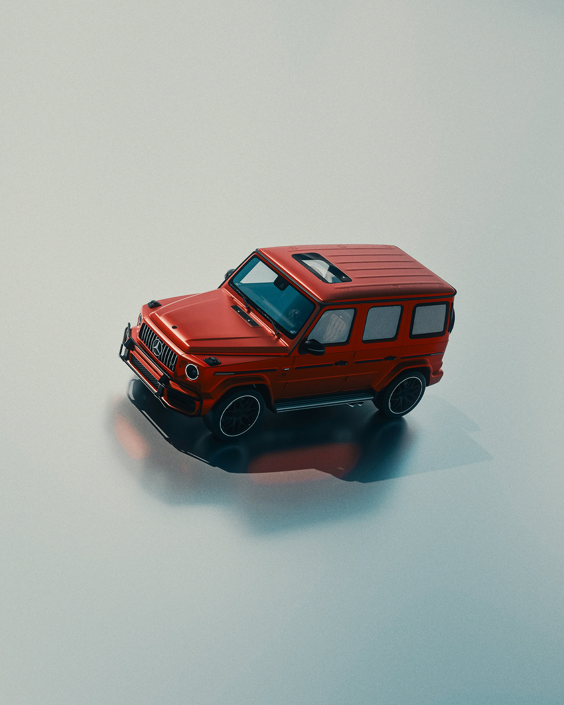

Tohle je moje první stránka na internetu.
Jmenuji se Anatoliy a chodím do IT2 na SŠEMI.
Velmi mě baví programování pro web. Zajímá mě, jak vytvářet interaktivní aplikace, které mohou uživatelé používat v prohlížeči. Rád se učím nové technologie a zlepšuji své dovednosti.
…
…

| Den | 7:10–7:55 | 8:00–8:45 | 8:50–9:35 | 9:40–10:25 | 10:30–11:15 | 11:20–12:05 | 12:10–12:55 | 13:00–13:45 |
|---|---|---|---|---|---|---|---|---|
| Pondělí | OS | OS | PRGA | PRGA | AS | AS | ||
| Úterý | OTA | OS | PRX | PRX | Fy | AJ | ||
| Středa | PRG | PRG | Fy | ČJL | AJ | |||
| Čtvrtek | KyP | PE | ||||||
| Pátek | TV | TV | ČJL | M | AJ | ČT | ČJL |